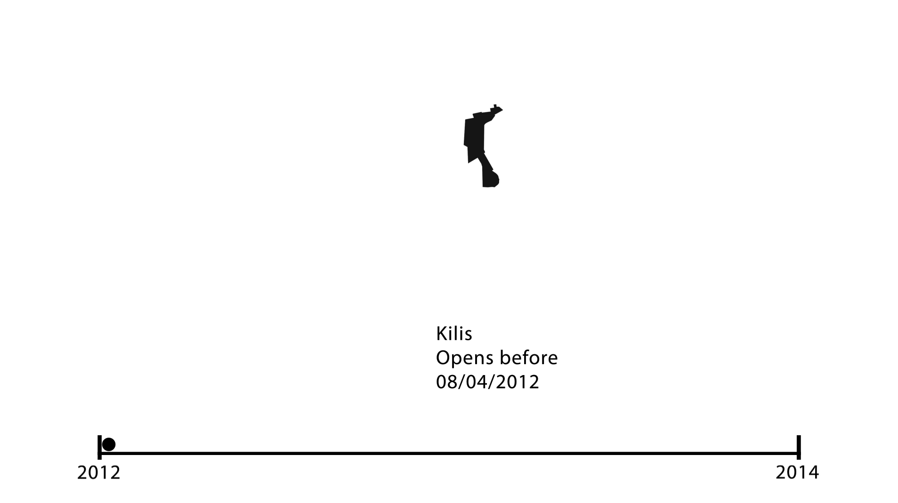
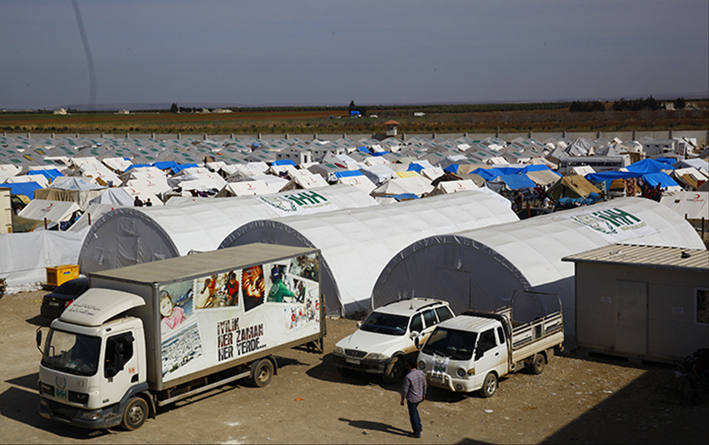

Refugee Camps in the Aleppo Region
As Aleppo burns and crumbles, its people flee toward what they hope will be a safer existence. Moving northward and westward, the migrants forced from the city's besieged urbanity seek shelter in Turkey, with further passage and a better life beyond the border. The border is mighty, though, and does not yield to everyone. Instead, Syrian refugees have been piling up at Turkey's borders for the past several years. Some in the media estimate that nearly 100,000 refugees are waiting at the border.
1
The camp, then, becomes the new reality, the new urbanity for those fleeing Aleppo. Hastily constructed but inhabited for years, the refugee camp is its own type of city, carceral but also safe, secure but also hopeless. This case study looks at several of the camps on the Syria-Turkey border on the route from Aleppo to Turkey and beyond, seeing them as the type of urbanism that stems from conflict.This map shows the 7 refugee camps which are explored in this study - View image in full screen.
Evolution of Camps: June, 2011 to September, 2014
The countryside around Aleppo heading toward the Turkish border is dotted with settlements created by those fleeing the violence. Some are formal efforts by the United Nations High Commissioner for Human Rights or other non-governmental organizations, and some are informal villages created out of desperate need. In many cases, there is not a clear distinction between the two: formal efforts follow from informal ones, and informal areas grow around formal establishments. As such, it is very difficult to date and map refugee camps in this area. The above animation suggests when certain camp geographies came to be established, based upon the earliest date of evidence of their existence in satellite imagery. The amount of land given over to refugee encampments has steadily grown since the conflict started in 2011.
Kah Camp
View image in full screen.Kah Camp, 43 miles west of Aleppo's Citadel, was established sometime between March 11 and March 19, 2013. The camp grew informally at first and has subsequently received support from a number of non-governmental organizations, though it is not an official UNHCR camp. Kah is not the camp's official name, but rather a moniker taken from a nearby city; the camp does not have an official name. Because it is located within Syria's borders, the inhabitants of Kah Camp are considered internally displaced persons rather than refugees; it is unknown exactly how many reside there.
2
The below video, from Libya Human Aid, demonstrates the common typologies and fabric of the informal urbanisms that has sprung up in this location.LHAmanchester. "Kah Syrian Refugee Camp مخيم قح للنازحين السوريين". YouTube video, 01:29. Posted [Jan 2013]. https://www.youtube.com/watch?v=aAEoKjdhNoo.
Olive Tree Camp at Atmeh
View image in full screen.
The Olive Tree Camp, also known as Atmeh, is just north of the Kah Camp, and the two are often considered to be the same settlement. According to the Maram Foundation, the camp began as small collection of tents set sheltering people who had been turned away from Turkey; satellite imagery suggests that this first settlement occurred sometime between August 22, 2012 and March 11, 2013. Settling among olive groves, they came to call their settlement the Olive Tree Camp.
Saving Familes in Syria. "Olive Tree Camp March 2013". Filmed [Mar 2013]. YouTube video, 01:55. Posted [Mar 2013]. https://www.youtube.com/watch?v=vKVF4eLd718.3
It has since swelled in size and number of refugees, particularly given the recent closure by Turkey of its borders. Despite existing for reasons of despair, the camp has enabled the formation of some semblance of normal life, with some refugees setting up small businesses and service centers to cater to the needs of their neighbors.Bab al-Salam Camp
View image in full screen.
Bab al-Salam sits at the Turkish border nearly 50 kilometers to the north of Aleppo. The camp itself has grown around the existing border crossing station, first appearing between Sep. 5 and 23, 2012 as a handful of tents and now bursting with a strict grid of white tents supplemented by a more informal conflagration of blue tents and tarped shelters. In many ways, Bab al-Salam is the "waiting room" for Syrian refugees seeking safety across the border in Turkey: with Turkey's border closure, some have reported that the camp has become home to 20,000, if not more, civilians, many of whom have fled the recent bombing campaign and siege of Aleppo.
4
The Turkish government has, in fact, been carrying out humanitarian work at Bab al-Salam, with Kilis' mayor, Salesman Tapsiz, saying, "There is no need to take [the refugees] in because all of their needs are being taken care of."5
The video below, published by the Turkish IHH Humanitarian Relief Organization, depicts the ways in which life goes on even when one is forced to live their lives in the confines of a walled camp; in the distance can be seen the Kilis Refugee Camp, just over the border in Turkey.The Guardian. "Drone footage shows Bab al-Salama refugee camp on Turkey-Syria border". website video, 01:13. Posted [Feb 2016]. https://www.theguardian.com/world/video/2016/feb/13/drone-footage-shows-bab-al-salama-refugee-camp-on-turkey-syria-border-video.
Kilis Camp
View image in full screen.
Kilis Camp, in Turkey, consists of a great expanse of containers arranged in rows around the border crossing station. Opened before July 4, 2012, the camp was established to deal with the then-just emerging crisis of an influx of Syrian refugees.
6
The camp, designed and run by the Turkish government according to specifications laid out by the UNHCR, has been termed the "Perfect Refugee Camp" by the New York Times and has been cited as a model for future camp planning and construction.7
The video below demonstrates the cleanliness and orderliness that leads to such declarations. Hosting - as of April 18, 2016 - more than 11,000 refugees, the camp has also been a target of rocket violence from certain groups in northern Syria.8
https://www.youtube.com/embed/DtW6xUBkU2g
Muqawamah Camp
View image in full screen.
Muqawamah - "resistance" in Arabic - Camp is just one crow's kilometer from Bab al-Salam, and was probably developed between February 7 and July 10, 2014. It appears to be largely an effort by the Turkish organization IHH to address the needs of the continuing arrival of refugees to the border.
9
With the border shut, the forced and makeshift urbanity that has been ongoing for the past several years has increased its pace as well as its sophistication: Muqawamah is, in many ways, a suburb of sorts to Bab al-Salam, itself an exurb or "second city" to Kilis across the border.
Karkamis Camp
View image in full screen.
Karkamis Camp is located in Turkey nearly 108 kilometers from Aleppo. Given the recent crowding of Bab al-Salam and Kilis, however, it seems likely that those fleeing Aleppo will find it necessary to traverse the extra distance for the chance of escaping the warfare. The Karkamis Camp is sited, perpas, more to accept refugees fleeing Raqqa and other areas held by the Islamic State. Satellite imagery shows development organized along the clean lines of Kilis sometime between July 31 and September 17, 2012, and also shows what appear to be preparations to expand the camp. The video below, published by the Associated Press, discusses the genesis of the camp.
AP Archive. "New camps being built for Syrian refugees at Turkish side of border". YouTube Video, 01:24. Posted [Jul 2015]. https://www.youtube.com/watch?v=kndKQDR-8lY.
Bab al-Hawa Camp
View image in full screen.
The case of Bab al-Hawa is a very interesting one in term of the urbanism of a conflict. As with many of the border region's makeshift-cum-permanent camps, Bab al-Hawa is the site of a border crossing, with infrastructure for the inspection of goods and vehicles. Sometime between August 22 and November 3, 2012, it became the site of a tent city housing the displaced looking to transit into Turkey. The camp has also been a center of arms smuggling, with a variety of Syria's factions using the crossing to surreptitiously bring weaponry into the country.
10
On February 16, 2014, the camp was the scene of a firefight, demonstrating that even the created urbanisms of supposed safety are not immune from the realities of Syria's ongoing war.11
A video taken during the firefight follows. Due to its role in prolonging the war and as an acknowledgment of its lack of safety, the camp shut down sometime between March 19, 2013 and July 10, 2014.Fares, Tarek. "معبر باب الهوى 16/02/2014". Filmed [Feb 2014]. YouTube video, 00:40. Posted [Feb 2014].https://www.youtube.com/watch?v=wHwLMVas09k.
Produced by Jack Darcey, for the Conflict Urbanism: Aleppo seminar at Columbia University during Spring 2016. See all student work here.